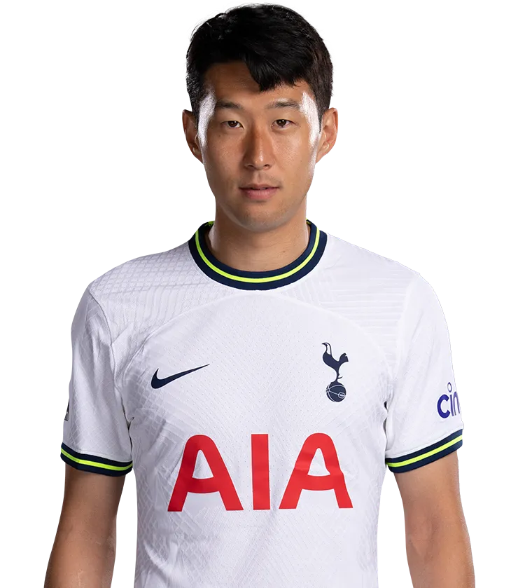

손흥민
Son Heung-min

소속팀 :
토트넘 홋스퍼 FC
토트넘 홋스퍼 FC
출생 :
1992년 7월 8일(30세) 강원도 춘천시 후평동
1992년 7월 8일(30세) 강원도 춘천시 후평동
신체 :
키 184cm / 체중 78kg
키 184cm / 체중 78kg
포지션 :
윙어, 스트라이커, 세컨드 스트라이커
윙어, 스트라이커, 세컨드 스트라이커
주발 :
오른발(양발)
오른발(양발)
플레이스타일 :
손흥민의 주 포지션은 좌측 윙어이며 중앙으로 이동해 연계하거나 직접 슈팅을 가져가는 플레이를 선호한다. 상황에 따라서는 오른쪽이나 중앙 공격수, 세컨드 스트라이커 위치도 가능하다. 데뷔 초반에는 빠른 주력을 적극 활용해 직접 볼을 운반하며 슈팅 찬스를 만드는 성향이 강했다. 손흥민의 주된 장점은 수비 뒷공간을 파고들 수 있는 폭발적인 가속도, 빠른 스피드와 뛰어난 위치 선정을 바탕으로 한 오프 더 볼 움직임, 양발을 활용한 강력하고 정교한 슈팅, 상대 키퍼와의 1 대 1 상황에서의 침착하고 정확한 마무리 등 크게 네 가지이다.
손흥민의 주 포지션은 좌측 윙어이며 중앙으로 이동해 연계하거나 직접 슈팅을 가져가는 플레이를 선호한다. 상황에 따라서는 오른쪽이나 중앙 공격수, 세컨드 스트라이커 위치도 가능하다. 데뷔 초반에는 빠른 주력을 적극 활용해 직접 볼을 운반하며 슈팅 찬스를 만드는 성향이 강했다. 손흥민의 주된 장점은 수비 뒷공간을 파고들 수 있는 폭발적인 가속도, 빠른 스피드와 뛰어난 위치 선정을 바탕으로 한 오프 더 볼 움직임, 양발을 활용한 강력하고 정교한 슈팅, 상대 키퍼와의 1 대 1 상황에서의 침착하고 정확한 마무리 등 크게 네 가지이다.
등번호 :
국가대표 7번, 클럽팀 7번
국가대표 7번, 클럽팀 7번
팀 커리어 :
함부르크 SV (2010~2013) -> 바이어 04 레버쿠젠 (2013~2015) -> 토트넘 홋스퍼 FC (2015~ )
함부르크 SV (2010~2013) -> 바이어 04 레버쿠젠 (2013~2015) -> 토트넘 홋스퍼 FC (2015~ )
국가대표 :
110경기 37골
110경기 37골
SNS :
 |
| 
|
응원가 :